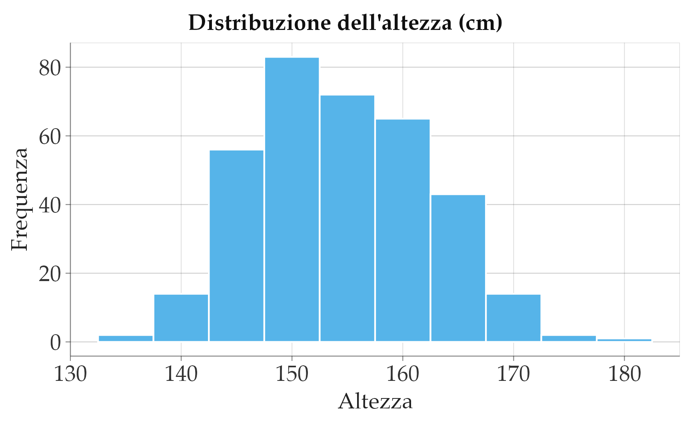
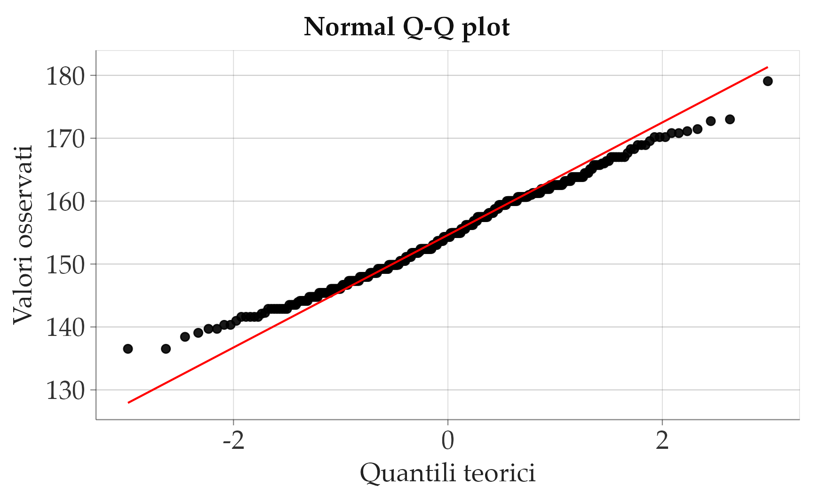
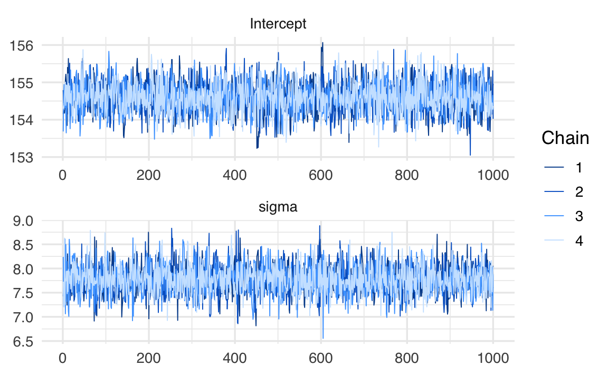
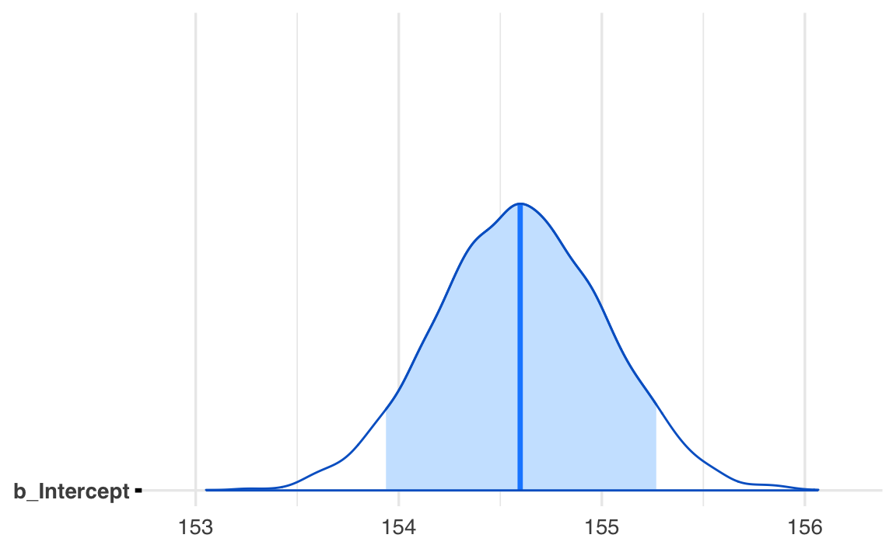
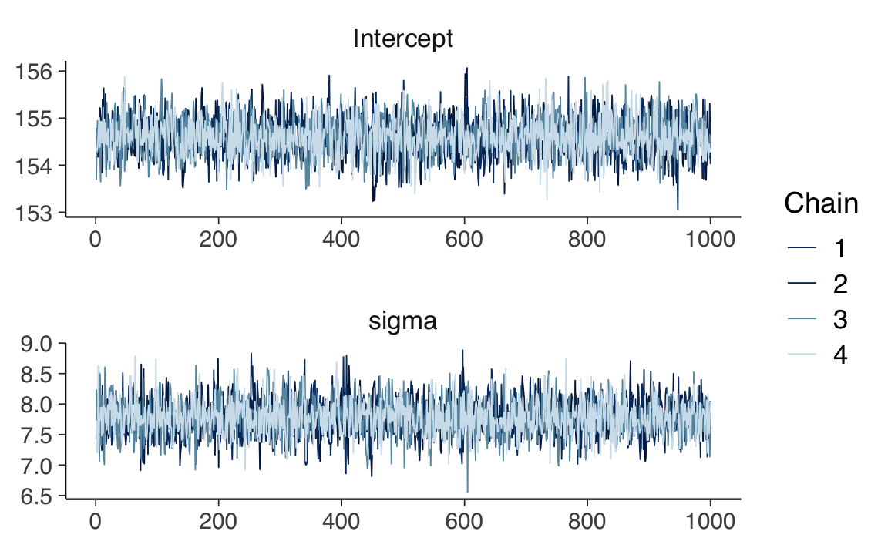
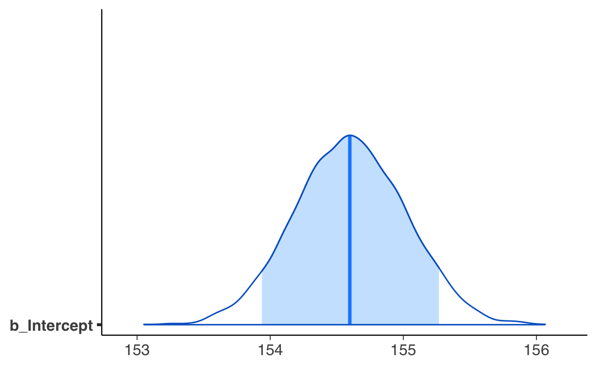

here::here("code", "_common.R") |>
source()
# Load packages
if (!requireNamespace("pacman")) install.packages("pacman")
pacman::p_load(cmdstanr, posterior, bayestestR, brms)65 Inferenza bayesiana su una media
In questo capitolo imparerai a
- fare inferenza sulla media di un campione;
- trovare le distribuzioni a posteriori usando
brms; - verificare il modello usando i pp-check plots.
Prerequisiti
- Leggere il capitolo Geocentric models di Statistical rethinking (McElreath, 2020).
65.1 Preparazione del Notebook
65.2 Introduzione
L’obiettivo principale di questo capitolo è esaminare un contesto che abbiamo già preso in considerazione in precedenza: ci troviamo di fronte a un campione di dati misurati su una scala a intervalli o rapporti e desideriamo effettuare inferenze sulla media della popolazione da cui il campione è stato estratto. Tuttavia, anziché procedere con una derivazione analitica della distribuzione a posteriori della media della popolazione, in questo caso utilizzeremo brms.
65.3 Il modello Normale
I priori coniugati Normali di una Normale non richiedono l’approssimazione numerica ottenuta mediante metodi MCMC. In questo capitolo, tuttavia, ripetiamo l’esercizio descritto nel Capitolo 52 usando brms.
65.4 Un esempio concreto
Per applicare il modello Normale, utilizzeremo i dati del censimento parziale dell’area di Dobe dei !Kung San, raccolti attraverso interviste condotte da Nancy Howell alla fine degli anni ’60. I !Kung San sono una suddivisione della popolazione San, che vive nel deserto del Kalahari, tra Namibia, Botswana e Angola, e mantengono un’economia basata su caccia e raccolta. Riprodurremo l’analisi descritta da McElreath (2020), esaminando unicamente i valori dell’altezza di individui di età superiore ai 18 anni.
df <- rio::import(here::here("data", "Howell_18.csv"))
df |>
head()
#> height weight age male
#> 1 151.8 47.83 63 1
#> 2 139.7 36.49 63 0
#> 3 136.5 31.86 65 0
#> 4 156.8 53.04 41 1
#> 5 145.4 41.28 51 0
#> 6 163.8 62.99 35 1Il campione include 352 osservazioni:
length(df$height)
#> [1] 352ggplot(df, aes(x = height)) +
geom_histogram(binwidth = 5, color = "black", fill = "lightgray") +
labs(title = "Istogramma dell'Altezza", x = "Altezza (cm)", y = "Frequenza") +
theme(
plot.title = element_text(hjust = 0.5)
)
Come indicato dall’istogramma, i dati sono approssimativamente distribuiti in maniera gaussiana:
df |>
ggplot(aes(sample = height)) +
stat_qq() +
stat_qq_line(colour = "red") +
labs(
title = "Normal Q-Q plot",
x = "Teorici (Z-score)",
y = "Valori osservati"
) +
theme(
plot.title = element_text(hjust = 0.5)
)
In realtà, dal Q-Q plot si nota un piccolo scostamento sistematico. Quando la retta che approssima i punti empirici risulta più piatta rispetto alla diagonale teorica (che avrebbe pendenza 1 se i dati fossero perfettamente normali), la distribuzione empirica risulta meno dispersa di una Gaussiana di riferimento: i quantili empirici aumentano più lentamente di quelli teorici, indicando una varianza leggermente inferiore (o code meno ampie). Nel caso presente, tuttavia, questo scostamento è di modesta entità e si può comunque procedere all’adattamento di un modello gaussiano.
La media dei valori dell’altezza nel campione è:
mean(df$height)
#> [1] 154.6con una deviazione standard pari a:
sd(df$height)
#> [1] 7.74265.5 Modello frequentista semplice
Iniziamo con un modello frequentista molto semplice, in cui ipotizziamo che ogni osservazione \(y_i\) sia generata dal modello:
\[ y_i = \alpha + \varepsilon_i, \]
dove \(\varepsilon_i\) è un errore aleatorio con media zero (ad esempio, \(\varepsilon_i \sim \mathcal{N}(0, \sigma^2)\)) e \(\alpha\) è la sola incognita (intercetta). Poiché non ci interessa includere altre variabili predittive, stiamo stimando semplicemente la media di \(y\).
La stima di \(\alpha\) è basata sul principio di massima verosimiglianza, senza informazioni a priori. In R, con l’approccio frequentista, ci basta usare:
fm1 <- lm(
formula = height ~ 1,
data = df
)Qui, height ~ 1 indica che vogliamo un modello con sola intercetta (nessuna covariata). Analizziamo il risultato:
summary(fm1)
#>
#> Call:
#> lm(formula = height ~ 1, data = df)
#>
#> Residuals:
#> Min 1Q Median 3Q Max
#> -18.072 -6.007 -0.292 6.058 24.473
#>
#> Coefficients:
#> Estimate Std. Error t value Pr(>|t|)
#> (Intercept) 154.597 0.413 375 <2e-16
#>
#> Residual standard error: 7.74 on 351 degrees of freedomsummary(fm1)mostra la stima puntuale di \(\alpha\) (che è la media campionaria diheight) assieme ad altri indicatori (p-value, R-squared e così via, anche se in questo caso non ha senso parlare di R-squared con un solo parametro).
65.5.1 Intervallo di confidenza al 95%
Per ottenere l’intervallo di confidenza (nel senso frequentista) della stima di \(\alpha\), usiamo:
confint(fm1, level = 0.95)
#> 2.5 % 97.5 %
#> (Intercept) 153.8 155.4Questo produce l’intervallo di confidenza al 95% basato su procedure di inferenza classica (stima della varianza e dell’errore standard di \(\alpha\)).
65.6 Modello bayesiano senza specificare priori (priori uniformi)
Ora vogliamo replicare lo stesso modello usando un approccio bayesiano con il pacchetto brms. Se non specifichiamo esplicitamente la distribuzione a priori di \(\alpha\), brms usa di default un prior debolmente informativo, di fatto molto simile a non avere un’informazione a priori.
Il codice è analogo:
fm2 <- brm(
formula = height ~ 1,
data = df,
backend = "cmdstanr"
)- Anche qui, il modello è \(y_i = \alpha + \varepsilon_i\), ma è gestito in modo bayesiano.
summary(fm2)mostrerà la posterior mean (o mediana, a seconda dei parametri di configurazione) per \(\alpha\), l’errore standard e l’intervallo di credibilità.
summary(fm2)
#> Family: gaussian
#> Links: mu = identity; sigma = identity
#> Formula: height ~ 1
#> Data: df (Number of observations: 352)
#> Draws: 4 chains, each with iter = 2000; warmup = 1000; thin = 1;
#> total post-warmup draws = 4000
#>
#> Regression Coefficients:
#> Estimate Est.Error l-95% CI u-95% CI Rhat Bulk_ESS Tail_ESS
#> Intercept 154.59 0.41 153.76 155.38 1.00 2729 2179
#>
#> Further Distributional Parameters:
#> Estimate Est.Error l-95% CI u-95% CI Rhat Bulk_ESS Tail_ESS
#> sigma 7.77 0.30 7.20 8.37 1.00 3096 2129
#>
#> Draws were sampled using sample(hmc). For each parameter, Bulk_ESS
#> and Tail_ESS are effective sample size measures, and Rhat is the potential
#> scale reduction factor on split chains (at convergence, Rhat = 1).65.6.1 Intervallo di credibilità
L’output di summary(fm2) presenta di default l’intervallo di credibilità al 95%. Questo valore può essere modificato con l’argomento prob =, ad esempio summary(fm2, prob = 0.90) per un 90% di credibilità.
In assenza di un priore informativo, la distribuzione a posteriori è sostanzialmente uguale a quella massima verosimiglianza (più un’eventuale correzione di normalizzazione), quindi i risultati numerici corrispondono molto da vicino a quelli ottenuti dal metodo frequentista. Piccole discrepanze sono dovute alle approssimazioni MCMC.
65.7 Differenze di interpretazione degli intervalli
Approccio frequentista:
- L’intervallo di confidenza (ad esempio \([153.78, 155.41]\)) è un procedimento statistico che, se ripetuto molte volte su campioni diversi, “catturerà” il vero valore di \(\alpha\) nel 95% dei casi. In altre parole, è un’affermazione sul metodo di costruzione dell’intervallo, non sull’incertezza del parametro in sé.
- Non è lecito dire “c’è il 95% di probabilità che \(\alpha\) stia nell’intervallo \([153.78, 155.41]\)”. La probabilità si riferisce alla procedura di campionamento dei dati, non al parametro (che nel frequentismo è considerato fisso e ignoto).
- L’intervallo di confidenza (ad esempio \([153.78, 155.41]\)) è un procedimento statistico che, se ripetuto molte volte su campioni diversi, “catturerà” il vero valore di \(\alpha\) nel 95% dei casi. In altre parole, è un’affermazione sul metodo di costruzione dell’intervallo, non sull’incertezza del parametro in sé.
Approccio bayesiano:
- L’intervallo di credibilità \([153.78, 155.41]\) al 95% dice che, dati i dati osservati e la prior (qui praticamente uniforme), c’è il 95% di probabilità che \(\alpha\) appartenga a quell’intervallo.
- Qui la probabilità è assegnata direttamente al parametro \(\alpha\), perché nella prospettiva bayesiana il parametro è visto come una variabile aleatoria che riflette la nostra incertezza prima dell’osservazione dei dati (prior) e dopo l’osservazione dei dati (posterior).
- L’intervallo di credibilità \([153.78, 155.41]\) al 95% dice che, dati i dati osservati e la prior (qui praticamente uniforme), c’è il 95% di probabilità che \(\alpha\) appartenga a quell’intervallo.
In sintesi:
- secondo l’approccio frequentista: l’intervallo di fiducia è una proprietà della procedura di stima; il parametro è fisso, i dati sono casuali.
- secondo l’approccio Bayesiano: l’intervallo di credibilità è una proprietà della distribuzione a posteriori; il parametro è casuale (nel senso che abbiamo incertezza su di esso), e i dati sono osservati.
65.8 Riportare i Risultati
Nel caso frequentista, il risultato può essere riportato nel modo seguente:
- L’analisi ha fornito una stima puntuale di α pari a 154.6, con un intervallo di confidenza al 95% compreso tra [153.8; 155.4].
Nel caso bayesiano diciamo:
- L’analisi bayesiana, condotta con una prior non informativa, ha restituito una stima a posteriori di α pari a 154.6, con un intervallo di credibilità al 95% [153.8; 155.4].
65.9 Conclusioni Intermedie
- Con
lm()(modello lineare frequentista), otteniamo la stima di \(\alpha\) con massima verosimiglianza e un intervallo di confidenza al 95%.
- Con
brm()e un priore piatto (o molto debole), il risultato numerico è essenzialmente lo stesso, ma la filosofia interpretativa dell’intervallo \([153.78, 155.41]\) cambia.
- Se volessimo aggiungere informazioni a priori, potremmo specificare un priore su \(\alpha\) in
brm(), e otterremmo stime a posteriori diverse dalle frequentiste, soprattutto se i dati sono poco informativi.
In questo modo, abbiamo mostrato come lo stesso modello (una semplice stima di media) produca numeri quasi identici in ottica frequentista e bayesiana se il prior è non informativo, pur differendo profondamente nell’interpretazione degli intervalli risultanti.
65.10 Modello Bayesiano con Prior
Impostiamo una distribuzione a priori \(\mathcal{N}(181, 30)\) per il parametro \(\mu\) e una distribuzione a priori \(\mathcal{N}(0, 20)\) per il parametro \(\sigma\). Seguendo McElreath (2020), ho impostato la distribuzione a priori per \(\mu\) sul valore della mia altezza, per incorporare nel modello le mie conoscenze precedenti rispetto ai valori dell’altezza.
Pertanto, il modello Normale si definisce nel modo seguente:
\[ \begin{align} Y_i &\sim \mathcal{N}(\mu, \sigma) \notag\\ \mu &\sim \mathcal{N}(181, 30) \notag\\ \sigma &\sim \mathcal{N}(0, 20) \notag \end{align} \]
Con questa specifica del modello:
- la variabile casuale \(Y_i\) segue una distribuzione normale con parametri \(\mu\) e \(\sigma\);
- il parametro \(\mu\) ha una distribuzione a priori normale con media 181 e deviazione standard 30;
- il parametro \(\sigma\) ha una distribuzione a priori normale con deviazione standard 20, troncata inferiormente a 0.
Per \(\sigma\), la normale troncata con deviazione standard pari a 20 permette una grande variabilità, garantendo valori positivi per la deviazione standard della distribuzione normale di \(Y_i\). I parametri \(\mu\) e \(\sigma\) sono sconosciuti e rappresentano l’oggetto dell’inferenza.
fm3 <- brm(
formula = height ~ 1, # Modello con sola intercetta (mu)
data = df,
family = gaussian(), # Distribuzione Normale
prior = c(
brms::prior(normal(181, 30), class = "Intercept"), # Prior su mu
brms::prior(normal(0, 20), class = "sigma") # Prior su sigma
),
chains = 4,
iter = 2000,
seed = 1234,
backend = "cmdstanr"
)summary(fm3)
#> Family: gaussian
#> Links: mu = identity; sigma = identity
#> Formula: height ~ 1
#> Data: df (Number of observations: 352)
#> Draws: 4 chains, each with iter = 2000; warmup = 1000; thin = 1;
#> total post-warmup draws = 4000
#>
#> Regression Coefficients:
#> Estimate Est.Error l-95% CI u-95% CI Rhat Bulk_ESS Tail_ESS
#> Intercept 154.60 0.41 153.80 155.41 1.00 3156 2659
#>
#> Further Distributional Parameters:
#> Estimate Est.Error l-95% CI u-95% CI Rhat Bulk_ESS Tail_ESS
#> sigma 7.77 0.29 7.20 8.38 1.00 3256 2596
#>
#> Draws were sampled using sample(hmc). For each parameter, Bulk_ESS
#> and Tail_ESS are effective sample size measures, and Rhat is the potential
#> scale reduction factor on split chains (at convergence, Rhat = 1).Anche usando questi prior debolmente informativi per \(\alpha\) e \(\sigma\), l’intervallo a posteriori per \(\alpha\) coincide con quello frequentista.
Calcoliamo ora l’intervallo di credibilità all’89%:
summary(fm3, prob = 0.89)
#> Family: gaussian
#> Links: mu = identity; sigma = identity
#> Formula: height ~ 1
#> Data: df (Number of observations: 352)
#> Draws: 4 chains, each with iter = 2000; warmup = 1000; thin = 1;
#> total post-warmup draws = 4000
#>
#> Regression Coefficients:
#> Estimate Est.Error l-89% CI u-89% CI Rhat Bulk_ESS Tail_ESS
#> Intercept 154.60 0.41 153.94 155.27 1.00 3156 2659
#>
#> Further Distributional Parameters:
#> Estimate Est.Error l-89% CI u-89% CI Rhat Bulk_ESS Tail_ESS
#> sigma 7.77 0.29 7.32 8.25 1.00 3256 2596
#>
#> Draws were sampled using sample(hmc). For each parameter, Bulk_ESS
#> and Tail_ESS are effective sample size measures, and Rhat is the potential
#> scale reduction factor on split chains (at convergence, Rhat = 1).Il risultato ottenuto replica i valori riportati da McElreath (2020) nella sua discussione dell’analisi di questi dati, anche se McElreath usa una procedura bayesiana diversa da quella presentata qui. McElreath (2020) giustifica la scelta dell’89% nel modo seguente:
Why 89%? It’s just the default. It displays a quite wide interval, so it shows a high-probability range of parameter values. If you want another interval, such as the conventional and mindless 95%, you can use precis(m4.1,prob=0.95). But I don’t recommend 95% intervals, because readers will have a hard time not viewing them as significance tests. 89 is also a prime number, so if someone asks you to justify it, you can stare at them meaningfully and incant, “Because it is prime.” That’s no worse justification than the conventional justification for 95%.
65.11 Funzioni bayesplot
Il pacchetto bayesplot mette a disposizione un insieme di funzioni molto utili per visualizzare la distribuzione a posteriori di uno o più parametri e per verificare la bontà di adattamento del modello ai dati.
65.11.1 Traceplot
Un traceplot consente di verificare la convergenza delle catene MCMC e di controllare l’autocorrelazione dei campioni a posteriori. Nel seguente esempio, si mostrano le tracce (i valori campionati lungo le iterazioni) per i parametri “Intercept” e “sigma”:
mcmc_trace(
fm3,
pars = c("Intercept", "sigma"),
facet_args = list(nrow = 2)
)
- L’asse orizzontale indica il numero di iterazione MCMC,
- L’asse verticale mostra il valore assunto dal parametro in quella iterazione,
- Avere catene che si mescolano bene e appaiono “stazionarie” (senza trend crescenti o calanti) è un buon segnale di convergenza.
65.11.2 Distribuzione a posteriori di un singolo parametro
Se vogliamo visualizzare la distribuzione a posteriori di un singolo parametro (ad esempio l’intercetta, qui chiamata “b_Intercept” nel modello brms), possiamo usare:
mcmc_areas(fm3, regex_pars = "b_Intercept", prob = 0.89)
- Viene mostrata la densità a posteriori, con un’area evidenziata corrispondente all’89% di credibilità (specificabile con
prob = 0.89o un altro valore).
- Se desideriamo un intervallo di credibilità al 95%, useremo
prob = 0.95.
65.11.3 Rappresentazione congiunta di due parametri
Per studiare la relazione tra due parametri (ad esempio “Intercept” e “sigma”):
mcmc_scatter(fm3, pars = c("Intercept", "sigma"))
- Si ottiene un diagramma di dispersione dei campioni a posteriori sui due assi, uno per ciascun parametro, con eventuali isodensità che mostrano le aree più probabili nella distribuzione congiunta.
65.11.4 Posterior Predictive Check
La funzione pp_check() è utilizzata per valutare se il modello è in grado di riprodurre i dati osservati:
pp_check(fm3)
- Questa funzione genera un confronto tra la distribuzione dei dati reali (rappresentati, ad esempio, con una linea nera su un istogramma) e la distribuzione di diversi dataset simulati dal modello, sfruttando la distribuzione a posteriori dei parametri (\(\alpha\), \(\sigma\), ecc.).
- Poiché il modello bayesiano è generativo, possiamo campionare nuovi dati “fittizi” a partire da ogni draw della posterior: in questo modo otteniamo molteplici dataset simulati, ognuno generato con un diverso valore di \(\alpha\) e \(\sigma\) estratto dalle distribuzioni posteriori.
Nel grafico prodotto da pp_check(), i dati osservati compaiono spesso come linea continua nera, mentre i dati simulati dal modello (ad esempio, 8 repliche di default) sono mostrati in colori più chiari o linee semitrasparenti. Se la distribuzione empirica si sovrappone bene a quelle generate, significa che il modello spiega adeguatamente i dati.
- Nel nostro caso, notiamo che le distribuzioni simulate risultano molto simili a quella osservata, indicando che la stima di \(\alpha\) e \(\sigma\) cattura in modo soddisfacente la variabilità dei dati.
- Se invece avessimo osservato discrepanze sistematiche (ad esempio, dati reali con code più pesanti, oppure un picco in posizioni diverse rispetto alle distribuzioni simulate), ci saremmo insospettiti riguardo all’adeguatezza del modello. In situazioni del genere, conviene rivedere le assunzioni (e.g. normalità, varianza costante, eventuali covariate assenti, ecc.) prima di trarre conclusioni dai risultati a posteriori.
In sintesi, il pacchetto bayesplot fornisce strumenti fondamentali per:
- Valutare la convergenza delle catene MCMC (traceplot, autocorrelation plots),
- Esplorare la distribuzione a posteriori dei parametri (mcmc_areas, mcmc_density, mcmc_scatter, …),
- Verificare la bontà del modello rispetto ai dati osservati mediante posterior predictive checks (pp_check).
Queste analisi grafiche forniscono informazioni cruciali sia sulla qualità del campionamento (e dunque sulla stabilità delle stime) sia sull’adeguatezza delle ipotesi modellistiche adottate.
65.12 L’approccio Tradizionale
Prima dell’avvento dei metodi bayesiani e di altri approcci moderni, l’inferenza sulla media di una popolazione veniva spesso affrontata ricorrendo al test t di Student.
65.12.1 La statistica T di Student
Il test si basa sulla seguente statistica:
\[ T = \frac{\bar{X} - \mu_0}{s / \sqrt{n}}, \]
dove:
- \(\bar{X}\) è la media campionaria di \(n\) osservazioni,
- \(\mu_0\) è il valore ipotizzato dalla cosiddetta “ipotesi nulla” (solitamente \(\mu_0 = 0\), ma può essere qualsiasi valore di riferimento),
- \(s\) è la deviazione standard campionaria corretta (ovvero stimatore di \(\sigma\)),
- \(n\) è la dimensione del campione.
Quando \(\sigma\) (deviazione standard vera) è sconosciuta e sostituita da \(s\), la statistica \(\,T\) segue (in teoria) una distribuzione t di Student con \(n - 1\) gradi di libertà:
\[ T \sim t_{(n-1)}. \]
65.12.2 Collegamento con la distribuzione Z
Se \(\sigma\) fosse nota, useremmo la statistica:
\[ Z = \frac{\bar{X} - \mu}{\sigma / \sqrt{n}}, \]
la quale segue una distribuzione Normale Standard (\(Z \sim \mathcal{N}(0,1)\)). Quando invece \(\sigma\) è sostituita da \(s\), la distribuzione di questa statistica diventa una t di Student (che, per \(n\) grande, si avvicina molto alla \(\mathcal{N}(0,1)\)).
65.12.3 Intervallo di confidenza
Con il test t di Student, si ottiene anche il tradizionale intervallo di confidenza al 95% per \(\mu\):
\[ \bar{X} \pm t_{0.975,\,n-1} \cdot \frac{s}{\sqrt{n}}, \]
dove \(t_{0.975,\,n-1}\) è il quantile al 97.5% della distribuzione t con \(n-1\) gradi di libertà (circa 2.0 se \(n\) è sufficientemente grande, mentre 1.96 è il valore per la distribuzione normale standard).
65.12.3.1 Esempio in R
Nell’esempio riportato, se vogliamo costruire l’intervallo di confidenza al 95% manualmente, possiamo scrivere:
mean(df$height) + c(-1, 1) *
qt(0.975, length(df$height) - 1) *
(sd(df$height) / sqrt(length(df$height)))
#> [1] 153.8 155.4oppure usare direttamente la funzione:
t.test(df$height, mu = 0)
#>
#> One Sample t-test
#>
#> data: df$height
#> t = 375, df = 351, p-value <2e-16
#> alternative hypothesis: true mean is not equal to 0
#> 95 percent confidence interval:
#> 153.8 155.4
#> sample estimates:
#> mean of x
#> 154.6che restituisce sia il valore della statistica T, sia l’intervallo di confidenza e il p-value del test t (ipotizzando, in questo esempio, \(\mu_0 = 0\) come ipotesi nulla).
65.12.4 Confronto con il modello di regressione a sola intercetta
Si noti che i risultati (media stimata e intervallo di confidenza) coincidono con quanto si otterrebbe usando una regressione lineare con sola intercetta (come lm(height ~ 1, data=df)) e richiedendo l’intervallo di confidenza con confint(). Sia il test \(t\) di Student sia la regressione lineare semplice (senza covariate) condividono infatti le stesse assunzioni di base e forniscono risultati equivalenti per quanto riguarda l’inferenza sulla media.
Informazioni sull’Ambiente di Sviluppo
sessionInfo()
#> R version 4.5.0 (2025-04-11)
#> Platform: aarch64-apple-darwin20
#> Running under: macOS Sequoia 15.4.1
#>
#> Matrix products: default
#> BLAS: /Library/Frameworks/R.framework/Versions/4.5-arm64/Resources/lib/libRblas.0.dylib
#> LAPACK: /Library/Frameworks/R.framework/Versions/4.5-arm64/Resources/lib/libRlapack.dylib; LAPACK version 3.12.1
#>
#> locale:
#> [1] C/UTF-8/C/C/C/C
#>
#> time zone: Europe/Rome
#> tzcode source: internal
#>
#> attached base packages:
#> [1] stats graphics grDevices utils datasets methods base
#>
#> other attached packages:
#> [1] brms_2.22.0 Rcpp_1.0.14 bayestestR_0.15.3 posterior_1.6.1
#> [5] cmdstanr_0.9.0 thematic_0.1.6 MetBrewer_0.2.0 ggokabeito_0.1.0
#> [9] see_0.11.0 gridExtra_2.3 patchwork_1.3.0 bayesplot_1.12.0
#> [13] psych_2.5.3 scales_1.4.0 markdown_2.0 knitr_1.50
#> [17] lubridate_1.9.4 forcats_1.0.0 stringr_1.5.1 dplyr_1.1.4
#> [21] purrr_1.0.4 readr_2.1.5 tidyr_1.3.1 tibble_3.2.1
#> [25] ggplot2_3.5.2 tidyverse_2.0.0 rio_1.2.3 here_1.0.1
#>
#> loaded via a namespace (and not attached):
#> [1] tidyselect_1.2.1 farver_2.1.2 loo_2.8.0
#> [4] R.utils_2.13.0 fastmap_1.2.0 tensorA_0.36.2.1
#> [7] pacman_0.5.1 digest_0.6.37 timechange_0.3.0
#> [10] lifecycle_1.0.4 StanHeaders_2.32.10 processx_3.8.6
#> [13] magrittr_2.0.3 compiler_4.5.0 rlang_1.1.6
#> [16] tools_4.5.0 yaml_2.3.10 data.table_1.17.0
#> [19] labeling_0.4.3 bridgesampling_1.1-2 htmlwidgets_1.6.4
#> [22] curl_6.2.2 pkgbuild_1.4.7 mnormt_2.1.1
#> [25] plyr_1.8.9 RColorBrewer_1.1-3 abind_1.4-8
#> [28] withr_3.0.2 R.oo_1.27.0 grid_4.5.0
#> [31] stats4_4.5.0 colorspace_2.1-1 inline_0.3.21
#> [34] ggridges_0.5.6 insight_1.2.0 cli_3.6.5
#> [37] mvtnorm_1.3-3 rmarkdown_2.29 generics_0.1.3
#> [40] RcppParallel_5.1.10 rstudioapi_0.17.1 reshape2_1.4.4
#> [43] tzdb_0.5.0 rstan_2.32.7 parallel_4.5.0
#> [46] matrixStats_1.5.0 vctrs_0.6.5 V8_6.0.3
#> [49] Matrix_1.7-3 jsonlite_2.0.0 hms_1.1.3
#> [52] glue_1.8.0 codetools_0.2-20 ps_1.9.1
#> [55] distributional_0.5.0 stringi_1.8.7 gtable_0.3.6
#> [58] QuickJSR_1.7.0 pillar_1.10.2 htmltools_0.5.8.1
#> [61] Brobdingnag_1.2-9 R6_2.6.1 rprojroot_2.0.4
#> [64] evaluate_1.0.3 lattice_0.22-7 R.methodsS3_1.8.2
#> [67] backports_1.5.0 rstantools_2.4.0 coda_0.19-4.1
#> [70] nlme_3.1-168 checkmate_2.3.2 xfun_0.52
#> [73] pkgconfig_2.0.3Bibliografia
McElreath, R. (2020). Statistical rethinking: A Bayesian course with examples in R and Stan (2nd Edition). CRC Press.